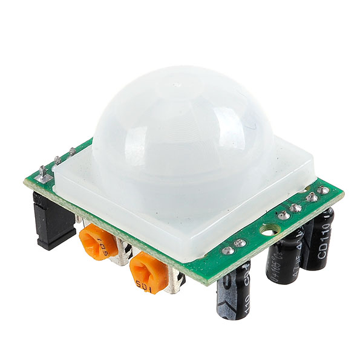
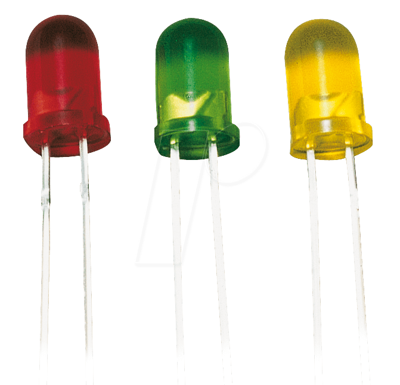
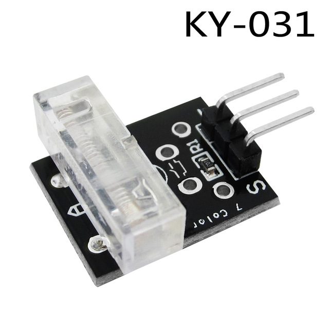

--- PROJECTS ---
All Projectss listed here are self-made by me and if you have any issues or have to know something about thease projects you can contact me.
Smart Dusbin
.jpeg)

| Servo motor | 
|
Ultrasonic Sensor | 
|
| PIR Sensor |

|
LCD Display | 
|
| Buzzer | 
|
3 X LED Bulbs |

|
| Arduino Uno or Any other Board | 
|
4 X 1K Resistors | |
| Jump Wires | |
This was named as a smart dustbin because it worked automatically as well when some one came near or infront of this the pin sensor identified it and the dustbin opend with the use of servo motor.More over the ultrasonic sensor will measure the quantity and it will display in the screen on the LCD display.when it filled with small quantity green light displays it ,when it filled with medium amount it will display using the blue light and when the dustbin filled totally the dustbin will never open to any other amount of waste until it's empty the space. Nevertheless when the dustbin got completely end with the space for waste a ten second alarm will notify it.
Accident Awarness System


| Piezo Plate Sensor | 
|
knock Sensor |

|
| Vibration Sensor | 
|
GPS Module | 
|
| GSM Module | 
|
1 X LED Bulbs | |
| Buzzer |
|
Jump Wires | |
| Arduino Uno or Any other Board |
|
2 X 1K Resistors | |
The main aim of this accident awareness system is sending quick messages to police ,hospitals to make sure to save the victim or the persons who faced accidents . This main purpose of the system is designed to avoid the lives threat that can occur due to delay of time to hospitalized.so this system will benificail to reduce this kind of threats. In here gps and gsm module will use to carry the message of the place where the accident occur as a sms with in 10 second .As well to identified the accident piezo plate sensor will use and knock sensor and vibration sensor will use to.identify the seroiusness of the accident.when an accident took place an alarm will sound with extingushing incadesent bulb.
- Software Serial Library for GSM Module
- Tiny GPS Library for GPS Module
- Tiny GPS Plus Master Library for GPS Module
Air Quality Detector

| MQ 135 Gas Sensor | |
LCD Module |
|
| Buzzer |
|
Jump Wires | |
| Arduino Uno or Any other Board |
|
2 X 1K Resistors | |
| 1 X LED Bulb | |
The gas sensor in this air quality dector will identify the condition of the air and response acording to it.When smoking incidence detect to this system it will show don' t smoke here on its lcd screen and will sound an alarm with an extingushing incadesent lcd bulb.Moreover when this system detect lp gas or carbon (which are known as harmful gasses )will show danger in the lcd screen while sounding an alarm with extingushin incadesent bulb